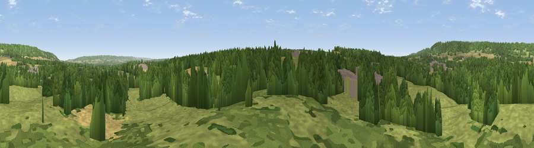

Viewpoint near Addington
#31432 in England · top 42% of its area beats it · near AddingtonThe view, rendered

A 360° render of this exact spot computed from the terrain model, tree cover and land cover — summer colours, afternoon light, calibrated against photographs of famous viewpoints. Real trees, hedges and buildings will differ in detail.
The panorama
Grey silhouette: terrain skyline in each direction (720 bearings, Earth curvature and refraction included). Dashed green: skyline with trees (+15 m) and buildings (+8 m) as obstacles. Blue strip: how far the ground is visible on each bearing.
Where the view opens
Wedge length = distance to the farthest visible ground on that bearing (vegetation-aware). Rings at 10, 25 and 50 km.
What fills the view
47% grassland · 40% woodland · 9% cropland · 4% built-up
Angular shares of the visible panorama (visual magnitude), not map area. Landscape diversity 0.47 (0–1 Shannon).
Key numbers
More beautiful places nearby
The staircase of upgrades: each row has a higher view potential than everything closer. Driving times are estimates from straight-line distance, calibrated against real road routing — check an actual route before setting out.
| Place | Direction | Drive | Score |
|---|---|---|---|
| Viewpoint near Offham | SSE · 2 km | ~6 min | 47.6 |
| Viewpoint near Vigo Village | NNW · 3 km | ~7 min | 61.9 |
| Viewpoint near Wrotham | NW · 3 km | ~7 min | 62.1 |
| Viewpoint near Vigo Village | N · 3 km | ~7 min | 64.6 |
| Viewpoint near Vigo Village | NNE · 3 km | ~8 min | 65.0 |
| Viewpoint near Wrotham | WNW · 4 km | ~8 min | 66.6 |
| Viewpoint near Shipbourne | WSW · 9 km | ~18 min | 69.1 |
| Viewpoint near Westwell | ESE · 35 km | ~53 min | 72.2 |
51.29977, 0.36148 · source: screening · position refined by local search. Computed location — check access rights before visiting.